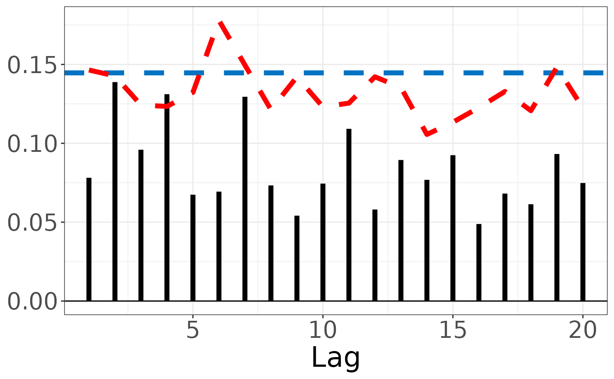
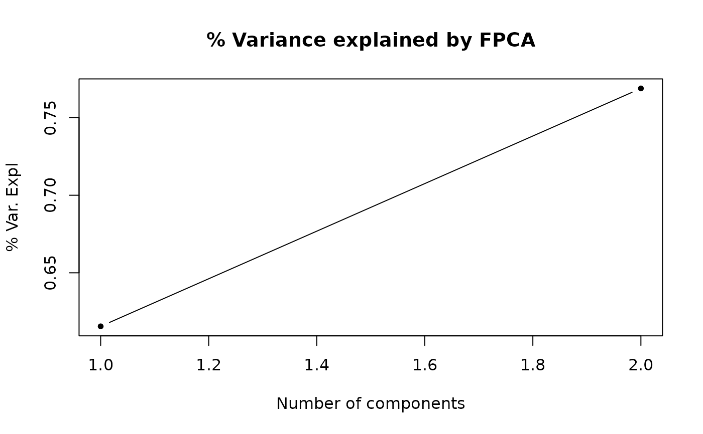
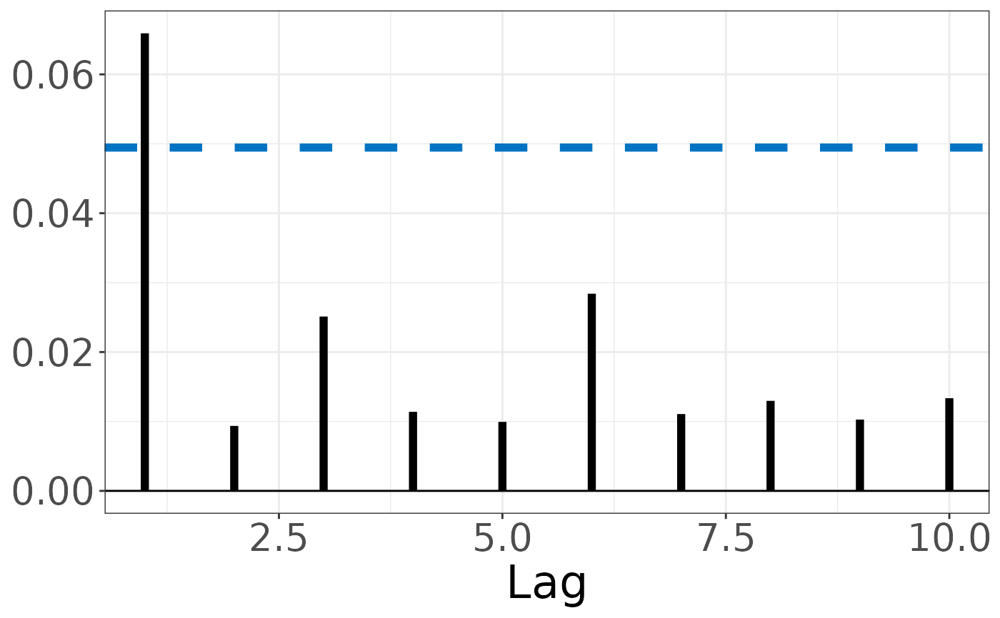

ACF/PACF Functions
acf.RdThis function computes the ACF/PACF of data. This can be applied on traditional
scalar time series or functional time series defined in dfts().
Usage
acf(x, lag.max = NULL, ...)
# Default S3 method
acf(x, lag.max = NULL, ...)
pacf(x, lag.max = NULL, ...)
# Default S3 method
pacf(x, lag.max = NULL, ...)
# S3 method for class 'dfts'
acf(
x,
lag.max = NULL,
alpha = 0.05,
method = c("Welch", "MC", "Imhof"),
WWN = TRUE,
figure = TRUE,
...
)
# S3 method for class 'dfts'
pacf(x, lag.max = NULL, n_pcs = NULL, alpha = 0.95, figure = TRUE, ...)Arguments
- x
Object for computation of (partial) autocorrelation function (ACF/PACF).
- lag.max
Number of lagged covariance estimators for the time series that will be used to estimate the (partial) autocorrelation function.
- ...
Further arguments passed to the
acf.dfts()function.- alpha
A value between 0 and 1 that indicates the confidence interval for the i.i.d. bounds of the partial autocorrelation function. By default
ci = 0.95.- method
Character specifying the method to be used when estimating the distribution under the hypothesis of functional white noise. Accepted values are:
"Welch": Welch approximation.
"MC": Monte-Carlo estimation.
"Imhof": Estimation using Imhof's method.
By default,
method = "Welch".- WWN
Logical. If
TRUE, WWN bounds are also computed- figure
Logical. If
TRUE, plots the estimated partial autocorrelation function with the specified i.i.d. bound.- n_pcs
Number of principal components that will be used to fit the ARH(p) models.
Value
ACF or PACF values and plots
Return a list with:
SWN_bound: The upper prediction bound for the i.i.d. distribution under strong white noise assumption.WWN_bound: The upper prediction bound for the i.i.d. distribution under weak white noise assumption.acfs: Autocorrelation values for each lag of the functional time series.plot: Plot of autocorrelation values for each lag of the functional time series.
Return a list with:
Blueline: The upper prediction bound for the i.i.d. distribution.rho: Partial autocorrelation coefficients for each lag of the functional time series.
References
Mestre G., Portela J., Rice G., Munoz San Roque A., Alonso E. (2021). Functional time series model identification and diagnosis by means of auto- and partial autocorrelation analysis. Computational Statistics & Data Analysis, 155, 107108. https://doi.org/10.1016/j.csda.2020.107108
Mestre, G., Portela, J., Munoz San Roque, A., Alonso, E. (2020). Forecasting hourly supply curves in the Italian Day-Ahead electricity market with a double-seasonal SARMAHX model. International Journal of Electrical Power & Energy Systems, 121, 106083. https://doi.org/10.1016/j.ijepes.2020.106083
Kokoszka, P., Rice, G., Shang, H.L. (2017). Inference for the autocovariance of a functional time series under conditional heteroscedasticity Journal of Multivariate Analysis, 162, 32–50. https://doi.org/10.1016/j.jmva.2017.08.004
Mestre G., Portela J., Rice G., Munoz San Roque A., Alonso E. (2021). Functional time series model identification and diagnosis by means of auto- and partial autocorrelation analysis. Computational Statistics & Data Analysis, 155, 107108. https://doi.org/10.1016/j.csda.2020.107108
See also
stats::acf(), acf.dfts()
Examples
acf(1:10)
x <- generate_brownian_bridge(100, seq(0,1,length.out=20))
acf(x,20)

x <- generate_brownian_bridge(100, seq(0,1,length.out=20))
pacf(x,lag.max = 10, n_pcs = 2)


#> $pacfs
#> [1] 0.064037897 0.009777752 0.022652278 0.010114004 0.010038782 0.027484322
#> [7] 0.010180744 0.010197617 0.007987793 0.014724775
#>
#> $SWN
#> [1] 0.04969999
#>